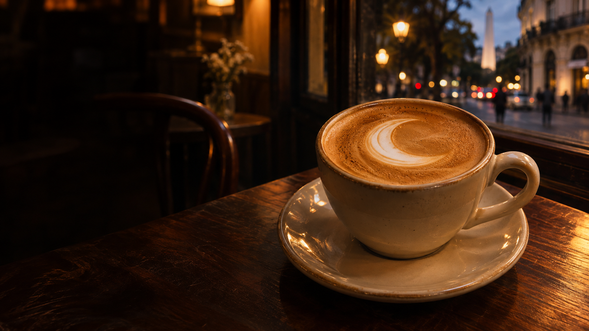
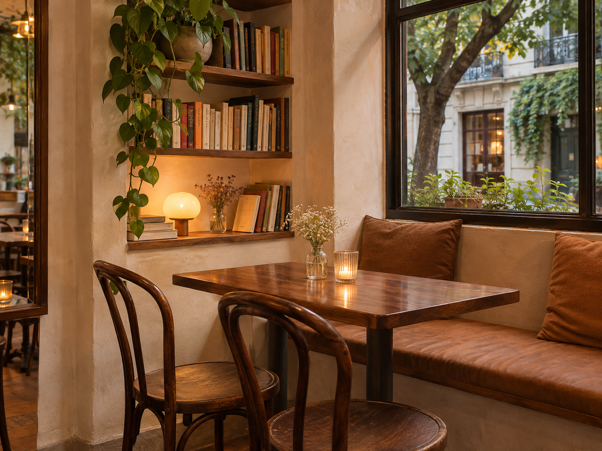

Latte de la casa
Espresso, leche sedosa y una pequeña luna en tu taza. Suave, redondo, sin apuro.

Café de especialidad. Ritmo de barrio.
Un buen café, una medialuna tibia
y ese momento que es sólo tuyo.
Nuestra manera de estar
Una mesa junto a la ventana.
El ruido del café cayendo.
Un disco de jazz, bajito.
Así imaginamos Luna: un café de barrio donde podés abrir la compu, encontrarte con alguien o simplemente mirar la calle con una taza entre las manos.
En esta casa, la mejor parte del café es el rato que te regalás.
Nos vemos en Luna.De nuestra carta
Sin vueltas. Cosas ricas,
hechas para acompañarte.
Carta ilustrativa de una propuesta ficticia. No se realizan pedidos.
Puertas adentro
La luz de la tarde, la mesa de siempre.
Un poco de Luna en imágenes.

Un café imaginado. Todas las imágenes fueron creadas con IA para esta demo.
Nos hacemos un lugar
¿Venís a charlar o con la compu?
Escribinos y buscá tu mesa junto a la ventana.
+54 11 5555-0101 · Número ficticio de demo.
El enlace abre WhatsApp. No permite reservas reales.